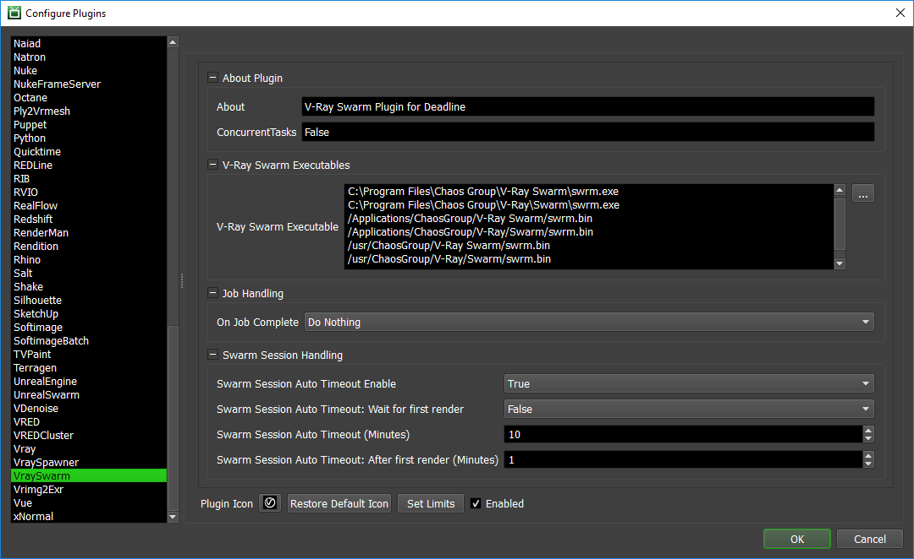

V-Ray Swarm¶
For information on the older V-Ray Distributed Rendering system, navigate to our V-Ray DBR documentation.
Interactive Distributed Rendering¶
Though we do attempt to support it, we recommend that you do NOT have V-Swarm running as a background service on render nodes. Deadline can be be more flexible and will spawn the V-Ray Swarm executable as a child process of the Deadline Worker. This makes your pipeline more resilient to crashes as when the job is completed we’ll tidy up the child processes. This will also prevent artists from unwillingly using compute resources they should not have access to since we shut down V-Ray Swarm when the job completes.

Like the V-Ray Distributed Rendering process, this is an interactive submitter that will submit a V-Ray Swarm job to reserve render nodes.
Setup¶
For your farm to support V-Ray Swarm, you have to ensure that the V-Ray Swarm processes can all detect each other. Ensure you read the official V-Ray Swarm Setup documentation for setup details.
Submission Options¶
The general Deadline options are explained in the Job Submission documentation. The V-Ray Swarm job options are:
Maximum Servers: The maximum number of Workers to reserve for V-Ray Swarm rendering.
Rendering¶
Workers that pick up the job will attempt to start V-Ray Swarm and create a Swarm tag equal to the Deadline job name (recognizable) followed by the Deadline job ID (unique).

The Workers will then wait until a user selects their tag in the application and starts the render.
Note that the V-Ray Swarm process can sometimes take a little while to initialize. This means that a Worker could have started V-Ray Swarm, but it’s not fully initialized yet. With V-Ray Swarm running on your local machine, you can navigate to localhost to view the machines that have initialized V-Ray Swarm and have the job tag waiting to render.
After the render is finished, if you’ve set-up automatic timeouts it’ll auto-complete the job for you. Otherwise you’ll wanna mark the job as complete in the Monitor so that the render nodes can move on to another job.
Plugin Configuration¶
You can configure the V-Ray Swarm plugin settings from the Monitor. While in power user mode, select Tools -> Configure Plugins and select the VraySwarm plugin from the list on the left.
V-Ray Swarm Executables
Here you can specify the location of the ‘swrm’ executable used for launching V-Ray Swarm.
Job Handling
On Job Complete: If desired, you can automatically archive or delete the Swarm job when it completes.
Swarm Session Handling
If enabled, these settings control what happens when a Worker that is running V-Ray Swarm has entered an IDLE state where it is not currently partaking in a V-Ray Swarm render. We define a session as the time between a V-Ray Swarm render completing and the next Swarm based render starting. There are additional settings to control the behaviour once at least one render has taken place on a Worker.
Swarm Session Auto Timeout Enable: If enabled, when a Swarm session has successfully completed on a Worker, the task on the Worker will be marked as complete after the Swarm session auto timeout period in seconds has been reached (Default: False).
Swarm Session Auto Timeout: Wait for first render: If enabled, it will force at least one render to complete before Auto Timeout becomes active (Default: True).
Swarm Session Auto Timeout (Minutes): This is the timeout period (Default: 15 minutes) when a Swarm session will timeout and be marked as complete by a Worker. This timeout is only active prior to the first render on the Worker.
Swarm Session Auto Timeout: After first render (Minutes): This is the timeout period (Default: 15 minutes) when a Swarm session will timeout and be marked as complete by a Worker. This timeout becomes active once the first render on the Worker is complete.
FAQ¶
Is V-Ray Swarm supported?
Yes. A special ‘reserve’ job is submitted that will run the V-Ray Swarm process on the render nodes. Once the V-Ray Swarm process is running, these nodes will be able to participate in distributed rendering.
What V-Ray Swarm applications are supported?
V-Ray Swarm in Deadline supports all applications that Chaos Group supports with V-Ray Swarm! The Monitor submitter does not care which application you are working in, since V-Ray Swarm handles the launching and uses the V-Ray Standalone process.
Why can’t I select a V-Ray Swarm version in the Monitor submitter?
Assuming we can find the V-Ray Swarm Executable in the Plugin Configuration, we automatically detect/connect to V-Ray Swarm without the user needing to know which version is installed.
Can two Workers on the same machine pick up a V-Ray Swarm job?
No. You can only have one V-Ray Swarm process running on a machine at a time, thus attempting to start a second V-Ray Swarm process will cause it to error out.
Can I mark ALL V-Ray Swarm jobs as completed after a render?
Yes. A number of options are available in the Plugin Configuration to automatically mark ALL V-Ray Swarm jobs as completed after the job has finished rendering.
Can I use V-Ray Spawner and V-Ray Swarm at the same time on the same machine?
No. This is NOT recommended.

{kind=link}